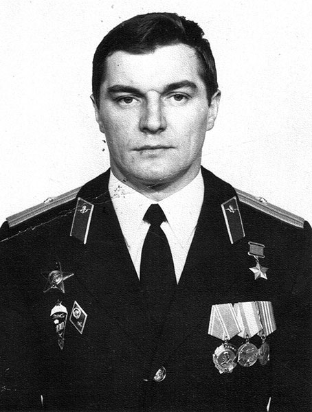

О герое
Василий Васильевич Пименов — советский и российский офицер ВДВ, гвардии полковник, легендарный комбат времен Афганской войны, заслуживший высшую награду Родины за спасение жизней своих бойцов и идеальное выполнение сложнейших боевых задач.
Фотопортрет

Достижения и вклад
- Звание Героя Советского Союза: Высший знак отличия СССР, присвоенный за мужество и героизм при выполнении интернационального долга.
- Успешное командование в бою: Проведение 35 сложнейших боевых операций в Афганистане с минимальными потерями личного состава.
- Выдающиеся государственные награды: Кавалер ордена Ленина, ордена Красной Звезды и ордена «За службу Родине в ВС СССР».